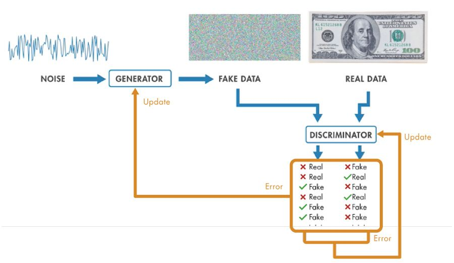
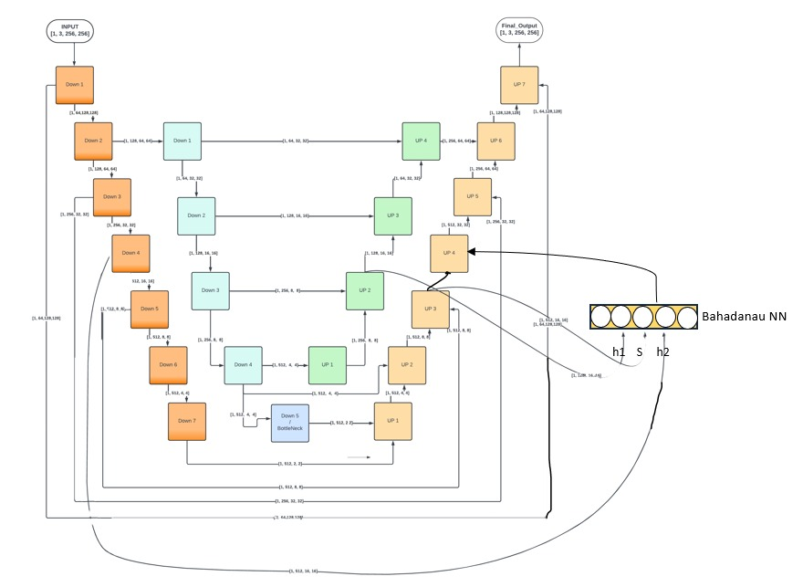
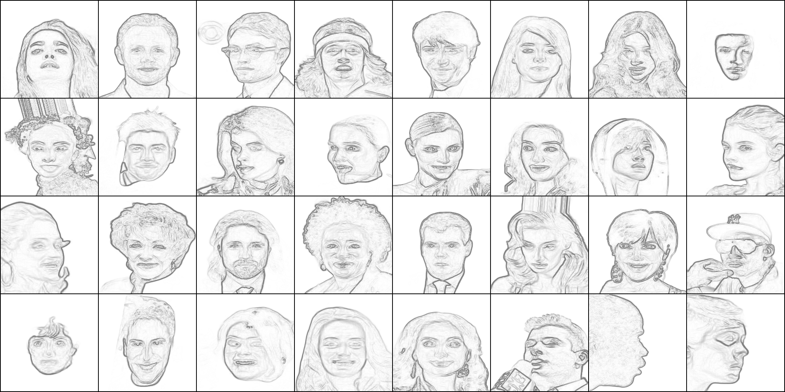
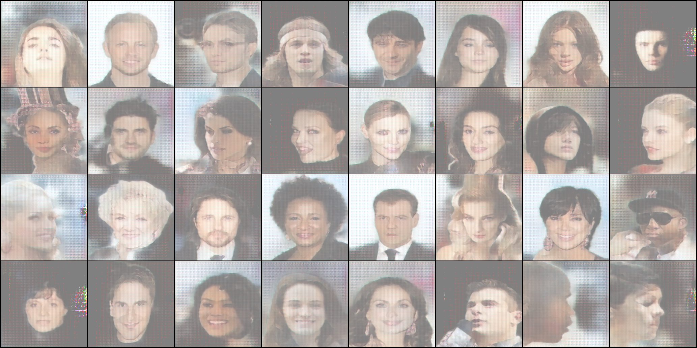

UvU Net: An Ensemble Generator for Image Colorization
Remember those scenes in crime dramas where a witness describes a suspect while a skilled artist transforms their words into a detailed black-and-white portrait? But have you ever wondered if we can use an ML model to colorize those sketches? Or, even cooler, if you can gift your grandparents their colorful portraits generated using original lifeless Black and White ones.
Introduction
Generative Adversarial Networks (GANs) are Deep Learning models used for multiple tasks like image generation, style transfer, image translation, etc. The Generator and Discriminator are two core components, where one is trained to create fake images from random noise, and the other tries to spot the fakes. Over time and through iterative training, they improve and reach a state where the Generator can ideally produce fakes as realistic as the originals.

Consider this as a game between two players: a counterfeiter (the Generator) and a detective (the Discriminator). The counterfeiter practices creating fake art from random noises, that later looks more and more real, while the detective gets better at spotting fakes. As they challenge each other, the counterfeiter becomes so skilled that their forgeries becomeNearly indistinguishable from authentic pieces.
Even Yann LeCun (Meta's chief AI scientist and developer of CNNs) described GANs as the most interesting idea in the last 10 years in Machine Learning.
Ensemble Novelty
An ensemble in machine learning refers to the process of combining multiple models to achieve improved performance, accuracy, and robustness compared to using individual models. It is widely regarded as a powerful technique for leveraging the strengths of different architectures to overcome their individual limitations.
For our task of image generation, we (me and a bunch of my friends) came up with an original idea to utilize an ensemble of the popular U-Net architecture, which is known for its efficacy in image-to-image translation tasks. The approach lies in designing the generator with the help of two U Nets. The outer one is a deeper network with alternate residual connections. Residual connections aka skip connections help preserve important features and mitigate the problem of vanishing gradient by enabling the flow of information directly across layers in deep networks. Whereas the inner shallow U Net can be treated as an independent network being trained on processed data fed by the second layer of the outer U Net.
The two major benefits that we were able to observe were as follows:
- Better Feature Learning: Alternating feed-forwarding of data to the decoder helps the model learn and extract features in a better way for enhanced style transfer.
- Bottleneck Compensation: One major drawback of U-Net-based models is the bottleneck at the end of the encoder, where the latent space is overly compact or compressed, potentially leading to a loss of critical information (2x2 for a 256x256 image and a 7-layer deep outer encoder). The inner encoder is designed with an additional encoder block (highlighted in blue) to compensate for the features captured at the latent space of the Outer U-Net.
Attention Mechanism
I hope you guys are familiar with the concept of attention used in transformers or basic encoder-decoder based Seq2Seq models. A moment for you to wonder why we are discussing this technique here in the domain of image and vision as attention was originally introduced in the domain of Natural Language Processing for improving performance in tasks like machine translation by focusing on relevant parts of the input sequence while generating each output token. But after an intense discussion with our Machine Learning course instructor, we learned that attention is not restricted to any particular domain and we can utilize it as per our requirements given that it serves the purpose it was designed for.

So in order to add contextual learning, we implemented Bahdanau attention to generate attention scores (used as features in our case). The output of Inner U Net's second's decoder block and Outer U Net's third decoder block are passed as current states and hidden states, if referred in context of original terminologies. Moving forward, we aim to explore other advanced attention mechanisms like global and local attentions, integrate larger datasets particularly featuring Indian faces, and optimize the model for faster training.
Model Training and Results
I would like to highlight that training Generative Adversarial Networks is a highly resource-intensive process, especially when working with large datasets like the popular celebrity faces dataset Celeba. We preprocessed nearly 150,000 image samples by performing Canny edge detection and background removal for high quality synthetic sketche generation. The training was on NVIDIA RTX 3060 (12GB VRAM) divided across two sessions, each lasting approximately 16 hours.
| Sample Input Sketches | Generated Colored Images |
|---|---|
 |
 |
Conclusion
In conclusion, through this blog, I have tried to present the innovative approach of using an ensemble architecture for image colorization, blending the power of conditional GANs, residual connections, and attention mechanisms. I hope I was able to help you grasp the key concepts behind the model's functioning, such as the importance of feature learning, the role of attention in contextual understanding, and the nuances of GAN training.
Back to Blogs